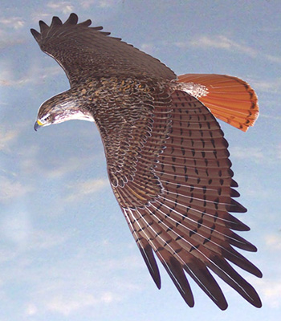
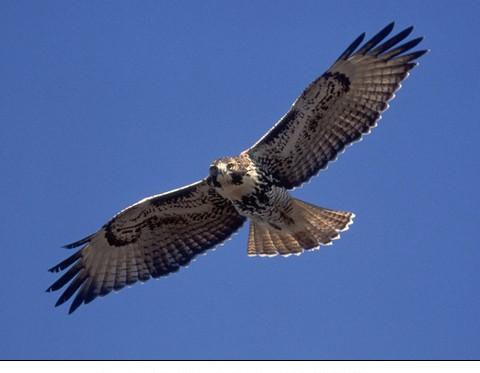
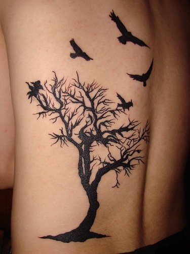
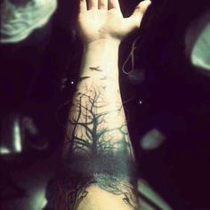
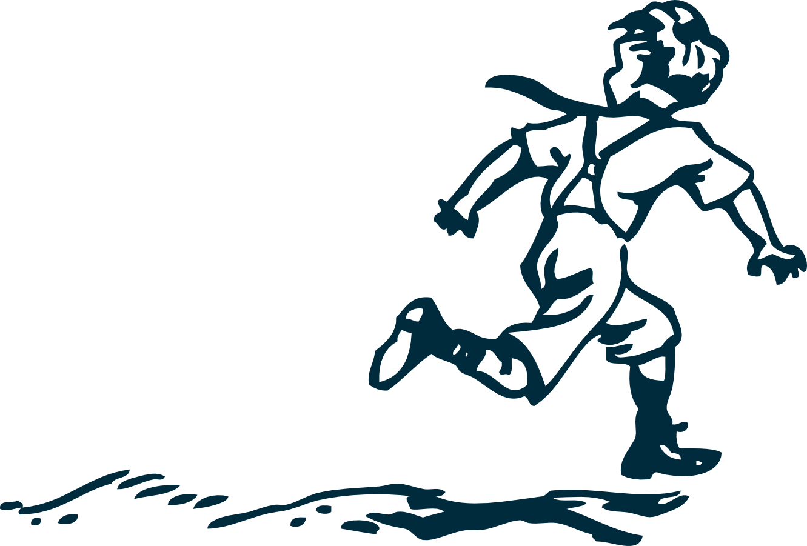
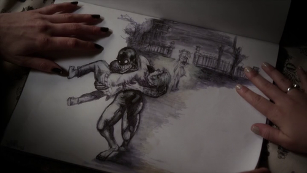
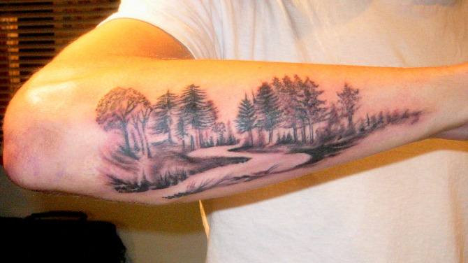
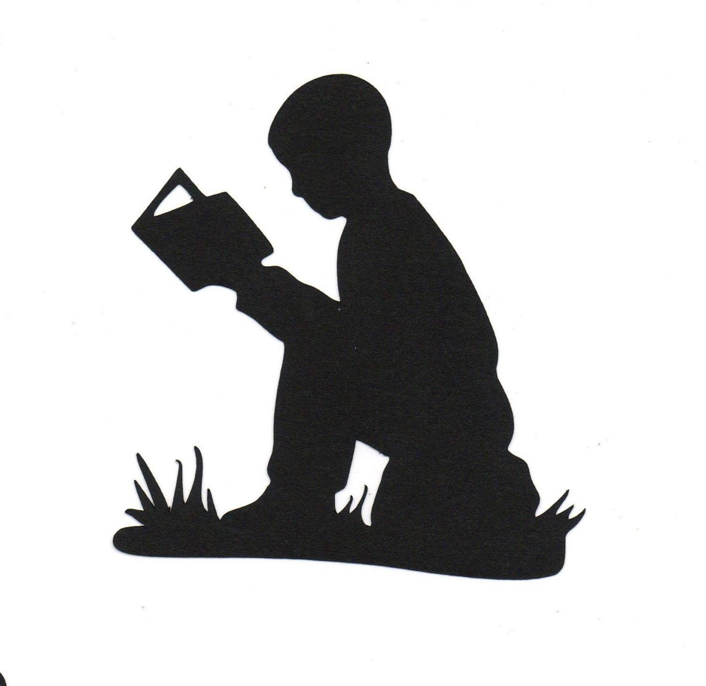

Top Hawk Detail

Bottom Hawk Detail if needed

Love this style but definitely want detail in the bird wing pattern and I realize this shows very small birds

Like the wide base of this and goulish style even if I'm not totally going for goulish

Example of how motion can be shown from non-top view

Example of not completely real-life, but not cartoony

Probably wouldn't work great for mine because we need a strait path, but this is a path no less.

Boy Running can be more like a silouette
